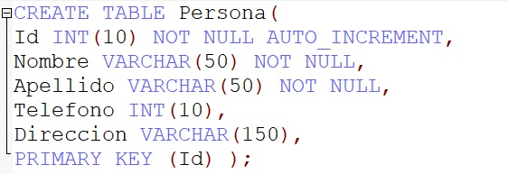
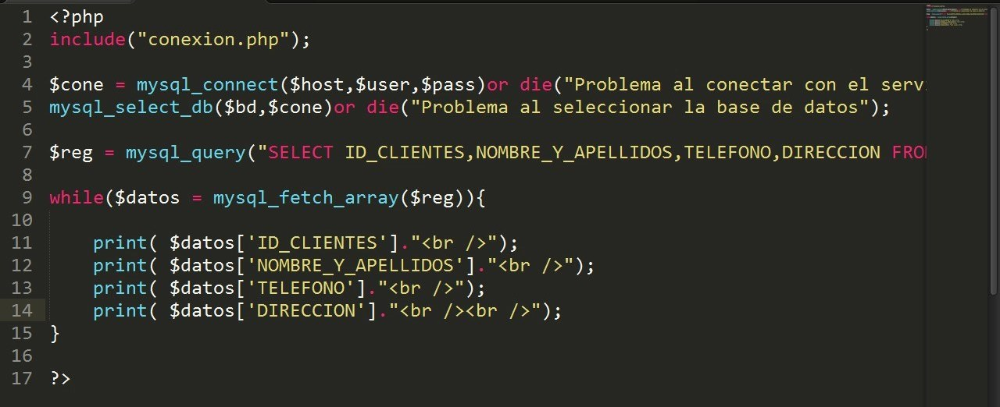

En el curso programación web 1, tenemos como objetivo dejar claro los pasos en la vinculación de una base de datos en una página desde PHP con opciones de consulta, edición, modificación y eliminación de datos y/o registros, para cumplir con estos objetivos contamos con estrategias claras y organizadas que te brindaran una guía paso a paso desde crear una base de datos en MYSQL conectándola con PHP, hasta consultar, editar, modificar y eliminar datos.
Instalación
Para comenzar debemos contar previamente con LAMP (Servidor Apache, MYSQL, PHP) para este paso vamos a apoyarnos en los siguientes enlaces:
Xampp Windows
Esta aplicación nos ayudara a gestionar apache server, MYSQL y PHP en plataformas Windows.
Lamp Linux
En el enlace se muestra como instalar todas las herramientas necesarias en plataformas Linux.
Luego de completar la instalación de la herramientas necesarias para el curso continuaremos con crear una base de datos la cual llamaremos “MyDB” esta contendrá una tabla “Persona” que tendrá como atributos: “Id”, “Nombre”, "Apellido", "Telefono", "Direccion".

Para obtener más información sobre tipos de datos SQL Clic aquí , en el siguiente video puedes apoyarte para crear la base de datos.
Conexión
En este puno crearemos una conexión a la base de datos para lo cual implementaremos el siguiente código, en el cual se muestra una función llamada
“conectar_MYSQL” que recibe como parámetros $usuario, $pass, $host, $bd
Donde los primeros 2 argumentos fueron creados por el usuario, host es por lo general el nombre del equipo o “localhost” y bd es “MyDB”.
